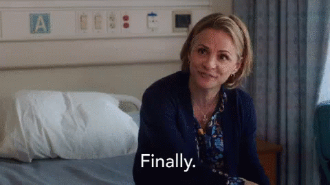

StayFocusd has been updated
Yes, really.
Chrome has automatically installed the newest version of StayFocusd.
Visit the changelog for more info on the latest changes.
Hate new things? You can disable these update notices in the Settings.
Is Chrome up-to-date?
Usually, Chrome automatically updates to the latest version and you never have to worry about it.
However, if you haven't restarted Chrome in a while, or if you're on a corporate network that limits software updates, you may be using an outdated version of Chrome. This can cause problems with StayFocusd (and other extensions).
For more info on how to update Chrome, visit the Google Support page.
Having problems with this update?
Things you should do (pick one):
- Email support@stayfocusd.com about the problem
- Submit your requests via our Discord Channel
- Send a tweet to @stayfocusd about the problem
Things you shouldn't do:
- Ask for help in a Chrome Web Store review. There's no way for me to respond to you there.
- Post a negative review to the Chrome Web Store. Give me a chance to help you before you go and crush my soul with your hatemouth.
- Leave me a voicemail accusing me of being a CIA agent who is blocking Facebook as part of a vast racist conspiracy (yes, this really happened).